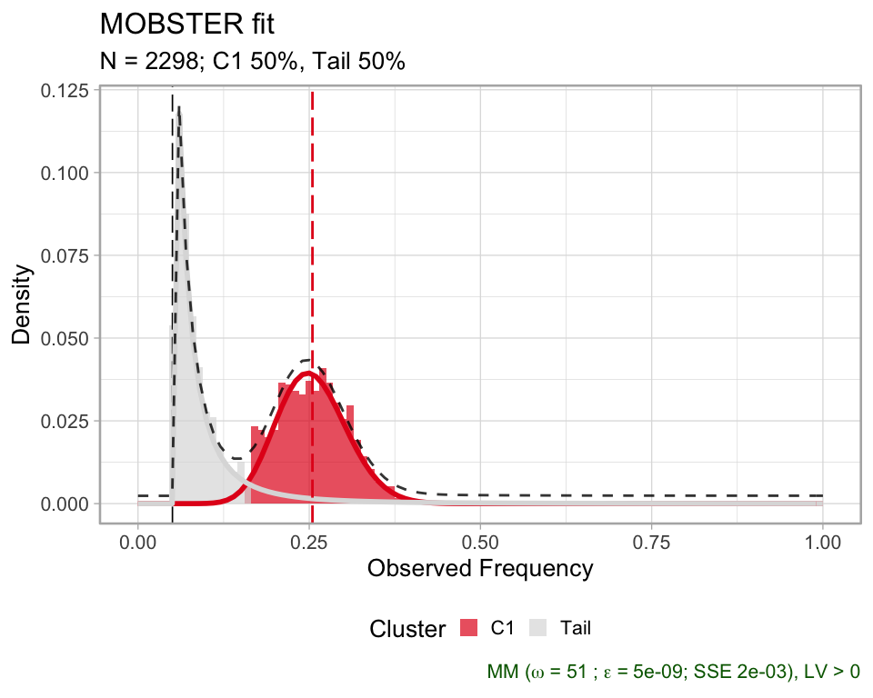
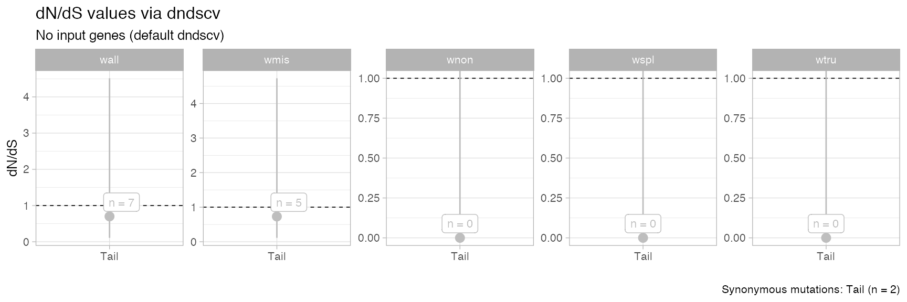

Computing dnds values
mobster interfaces with the dndscv R package to compute dN/dS values from its output clusters. The method implemented in dndscv is described in Martincorena, et al. “Universal patterns of selection in cancer and somatic tissues”, Cell 171.5 (2017): 1029-1041; PMID 29056346).
Requirements. In order to be able to compute dN/dS values mutations data must store their genomic coordinates:
- chromosome location
chrom, - position
from, - reference alleles
altandref.
Besides, it is important to know what is the reference genome used to align the genome; this information will be used by dndscv to annotate input mutations.
We show this analysis with the fits for one of the lung samples available in the package.
fit = mobster::LUFF76_lung_sample # Print and plot the model print(fit$best) #> -- [ MOBSTER ] n = 2298 with k = 1 Beta(s) and a tail ------------------------- #> * Clusters: p = 50% [Tail] and 50% [C1], with p > 0. #> * Tail [n = 1076, 50%] with alpha = 2. #> * Beta C1 [n = 1222, 50%] with mean = 0.25. #> i Score(s): NLL = -3095.24; ICL = -5784.22 (-6144.04), H = 359.82 (0). Fit #> converged by MM in 51 steps. plot(fit$best)

We compute the values using the clustering assignments from the best fit.
clusters = Clusters(fit$best) print(clusters) #> # A tibble: 2,298 x 14 #> Key Callers t_alt_count t_ref_count Variant_Classif~ DP VAF chr #> <int> <chr> <int> <int> <chr> <int> <dbl> <chr> #> 1 330 mutect~ 23 149 intergenic 172 0.134 chr2 #> 2 331 mutect~ 53 133 intergenic 186 0.285 chr2 #> 3 332 mutect~ 8 132 intergenic 140 0.0571 chr2 #> 4 334 mutect~ 26 112 intergenic 138 0.188 chr2 #> 5 335 mutect~ 40 102 intronic 142 0.282 chr2 #> 6 336 mutect~ 32 95 intronic 127 0.252 chr2 #> 7 337 mutect~ 28 134 intergenic 162 0.173 chr2 #> 8 338 mutect~ 14 148 intergenic 162 0.0864 chr2 #> 9 339 mutect~ 11 108 intronic 119 0.0924 chr2 #> 10 340 mutect~ 11 171 intergenic 182 0.0604 chr2 #> # ... with 2,288 more rows, and 6 more variables: from <chr>, ref <chr>, #> # alt <chr>, cluster <chr>, Tail <dbl>, C1 <dbl>
The available clusters are C1 and Tail; C1 is the clonal cluster. We compute dN/dS with the default parameters.
# Run by cluster and default gene list dnds_stats = dnds( clusters, gene_list = NULL ) #> Missing 'sample' column, assuming mutations from a single patient (adding a sample label otherwise). #> i 2298 mutations; 'by cluster' groups in 0 samples, with no genes (default dndscv). #> [refdb = hg19] Removing chr from chromosome names for hg19 reference compatability #> #> C1 Tail #> 1222 1076 #> #> -- Running dndscv -------------------------------------------------------------- #> #> -- Group Tail #> [1] Loading the environment... #> [2] Annotating the mutations... #> [3] Estimating global rates... #> [4] Running dNdSloc... #> [5] Running dNdScv... #> Regression model for substitutions (theta = 6.69e-05). #> #> -- Group C1 #> [1] Loading the environment... #> [2] Annotating the mutations... #> [3] Estimating global rates... #> [4] Running dNdSloc... #> [5] Running dNdScv... #> dndscv error #> Error in while ((it <- it + 1) < limit && abs(del) > eps) {: missing value where TRUE/FALSE needed #> -- dndscv results ------------------------------ wall, wmis, wnon, wspl, wtru -- #> # A tibble: 5 x 5 #> name mle cilow cihigh dnds_group #> <chr> <dbl> <dbl> <dbl> <chr> #> 1 wmis 0.731 0.113 4.73 Tail #> 2 wnon 0.00000000804 0 Inf Tail #> 3 wspl 0.0000000260 0 Inf Tail #> 4 wtru 0.0000000170 0 Inf Tail #> 5 wall 0.701 0.109 4.51 Tail
The statistics can be computed for a custom grouping of the clusters. Here it does not make much difference because we have only the clonal cluster, and the tail; but if we had one subclone C2 we could have pooled together the mutations in the clones using
# Not run here dnds_stats = dnds( clusters, mapping = c(`C1` = 'Non-tail', `C2` = 'Non-tail', `Tail` = 'Tail'), gene_list = NULL )
In the above analysis we have run dndscv using the default gene list (gene_list = NULL). Notice that errors raised by dndscv are intercepted by mobster; some of this errors might originate from a dataset with not enough substitutions to compute dN/dS.
The call returns:
- the table computed by
dndscv, where columndnds_grouplabels the group. - a
ggplotplot of the point estimates and the confidence interval;
# Summary statistics print(dnds_stats$dnds_summary) #> # A tibble: 5 x 5 #> name mle cilow cihigh dnds_group #> <chr> <dbl> <dbl> <dbl> <chr> #> 1 wmis 0.731 0.113 4.73 Tail #> 2 wnon 0.00000000804 0 Inf Tail #> 3 wspl 0.0000000260 0 Inf Tail #> 4 wtru 0.0000000170 0 Inf Tail #> 5 wall 0.701 0.109 4.51 Tail # Table observation countns print(dnds_stats$dndscv_table) #> # A tibble: 20,091 x 15 #> gene_name n_syn n_mis n_non n_spl wmis_cv wnon_cv wspl_cv pmis_cv ptrunc_cv #> <chr> <dbl> <dbl> <dbl> <dbl> <dbl> <dbl> <dbl> <dbl> <dbl> #> 1 ATF4 0 1 0 0 5262. 0 0 1.00e-4 0.998 #> 2 C14orf79 0 1 0 0 4702. 0 0 1.13e-4 0.998 #> 3 FAM189A1 0 1 0 0 3155. 0 0 1.72e-4 0.997 #> 4 RNF150 0 1 0 0 2793. 0 0 1.96e-4 0.998 #> 5 NEO1 0 1 0 0 1141. 0 0 5.09e-4 0.994 #> 6 TTN 0 0 0 0 0 0 0 8.36e-1 0.968 #> 7 MUC16 0 0 0 0 0 0 0 8.95e-1 0.990 #> 8 OBSCN 0 0 0 0 0 0 0 9.15e-1 0.989 #> 9 SYNE1 0 0 0 0 0 0 0 9.17e-1 0.985 #> 10 NEB 0 0 0 0 0 0 0 9.19e-1 0.978 #> # ... with 20,081 more rows, and 5 more variables: pallsubs_cv <dbl>, #> # qmis_cv <dbl>, qtrunc_cv <dbl>, qallsubs_cv <dbl>, dnds_group <chr> # Plot print(dnds_stats$plot)

The default plot contains results obtained from all substitution models available in dndscv. Specific models can be required using the parameters of the dnds function.
Using custom genes lists
A custom list of genes can be supplied in the call to dnds as the variable genes_list; the package provides 4 lists of interests for this type of computation:
- a list of driver genes compiled in
Martincorena et al. Cell 171.5 (2017): 1029-1041.; - a list of driver genes compiled in
Tarabichi, et al. Nature Genetics 50.12 (2018): 1630.; - a list of essential genes compiled in
Wang et al. Science 350.6264 (2015): 1096-1101.; - a list of essential genes compiled in
Bloomen et al. Science 350.6264 (2015): 1092-1096..
which are available to load.
# Load the list data('cancer_genes_dnds', package = 'mobster') # Each sublist is a list print(lapply(cancer_genes_dnds, head)) #> $Martincorena_drivers #> [1] "CCDC6" "EIF1AX" "HIST1H2BD" "MED12" "POLE" "SMARCB1" #> #> $Tarabichi_drivers #> [1] "ACVR1" "ACVR1B" "AKT1" "ALK" "AMER1" "APC" #> #> $Wang_essentials #> [1] "ABL1" "RPL23A" "AARS2" "TRMT112" "FARSA" "ABCB7" #> #> $Bloomen_essentials #> [1] "AARS" "AASDHPPT" "AATF" "ABCB7" "ABCE1" "ABCF1"
A custom gene list can be used as follows.
Pooling data from multiple patients
The input format of the dnds function allows to pool data from several fits at once. We pool data from the 2 datasets available in the package.
# 2 lung samples data('LU4_lung_sample', package = 'mobster') data('LUFF76_lung_sample', package = 'mobster')
We pool the data selecting the required columns.
dnds_multi = dnds( rbind( Clusters(LU4_lung_sample$best) %>% select(chr, from, ref, alt, cluster) %>% mutate(sample = 'LU4'), Clusters(LUFF76_lung_sample$best) %>% select(chr, from, ref, alt, cluster) %>% mutate(sample = 'LUFF76') ), mapping = c(`C1` = 'Non-tail', # Pool together all clonal mutations `Tail` = 'Tail' # Pool together all tail mutations), ) ) #> i 3580 mutations; 2 groups in 2 samples, with no genes (default dndscv). #> [refdb = hg19] Removing chr from chromosome names for hg19 reference compatability #> #> Non-tail Tail #> 2194 1386 #> #> -- Running dndscv -------------------------------------------------------------- #> #> -- Group Non-tail #> [1] Loading the environment... #> [2] Annotating the mutations... #> [3] Estimating global rates... #> [4] Running dNdSloc... #> [5] Running dNdScv... #> Regression model for substitutions (theta = 17.5). #> #> -- Group Tail #> [1] Loading the environment... #> [2] Annotating the mutations... #> [3] Estimating global rates... #> [4] Running dNdSloc... #> [5] Running dNdScv... #> Regression model for substitutions (theta = 8.54). #> -- dndscv results ------------------------------ wall, wmis, wnon, wspl, wtru -- #> # A tibble: 10 x 5 #> name mle cilow cihigh dnds_group #> <chr> <dbl> <dbl> <dbl> <chr> #> 1 wmis 1.16 0.375 3.58 Non-tail #> 2 wnon 2.25 0.223 22.8 Non-tail #> 3 wspl 0.0000000301 0 Inf Non-tail #> 4 wtru 0.658 0.0716 6.05 Non-tail #> 5 wall 1.11 0.370 3.33 Non-tail #> 6 wmis 0.508 0.121 2.13 Tail #> 7 wnon 0.00000000835 0 Inf Tail #> 8 wspl 0.0000000461 0 Inf Tail #> 9 wtru 0.0000000201 0 Inf Tail #> 10 wall 0.472 0.115 1.95 Tail print(dnds_multi$plot)